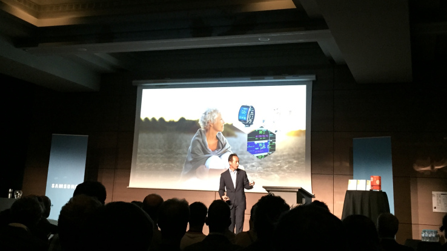

Source: The Journal Business ETC
Date: 26/01/2016
Internet of Things (IoT) network provider VT Networks has announced a new €1.2 million round of funding that will help secure Ireland’s first nationwide cost-effective connectivity network in 2016.
In November last year, VT Networks announced a partnership with French company Sigfox...
Read More
Source: The Irish Times
Date: 26/01/2016
Irish tech start-up VT Networks has raised €1.2 million in funding to roll out the first “internet of things” (IoT) network in Ireland.
Suretank founder and winner of the EY Entrepreneur of the Year 2013 Patrick Joy and Dome Telecom owner Dara O’Mahony are among the investors in the Dublin-based company...
Read More
Source: SiliconRepublic
Date: 26/01/2016
VT Networks, the company that has deployed Ireland’s first nationwide dedicated internet of things (IoT) network using Sigfox technology has raised €1.2m and says it is on target to connect 1m devices by the end of 2017...
Read More
 Source: Business Wire
Source: Business Wire
Date: 19/11/2015
LABEGE, France and DUBLIN-(BUSINES WIRE)-SIGFOX, the world's leading provider of dedicated Internet of Things (Iot) connectivity, and VT Networks today announce...
Read More
Source: m2mnow
Date: 16/09/2015
SIGFOX, a provider of Internet of Things (IoT) connectivity, has announced that mobile-telecom industry veteran Allen Proithis will head the company’s expansion in North America...
Read More
 Source: TeleGeography
Source: TeleGeography
Date: 15/09/2015
T-Mobile’s Czech subsidiary is looking to cover the entire territory of the Czech Republic with SimpleCell Networks’ SIGFOX solution, following the completion of a...
Read More
Source: TechRadar
Date: 12/08/2015
In the search for a long low-range radio communication solution, French startup SigFox has been getting the big players of the Internet of ...
Read More
 Source: Fortune
Source: Fortune
Date: 01/08/2015
Sigfox plans to launch its low-cost Internet of things platform in the U.S. ... The company building the network is called Sigfox, and it's based in...
Read More
Source: Fortune
Date: 21/07/2015
Sigfox plans to launch its low-cost Internet of things platform in the U.S. ... The company building the network is called Sigfox, and it's based in...
Read More

Source: TechCrunch
Date: 15/06/2015
Sigfox's $115 million mega round has yet to close (€100 million). Today, Samsung announced at a press conference that the company invested in the French startup as well.
Read More
VT is the SIGFOX Network Operator In Ireland. Our network is a country wide Ultra Narrow band telecoms network designed specifically for M2M & IoT communications.
About Us